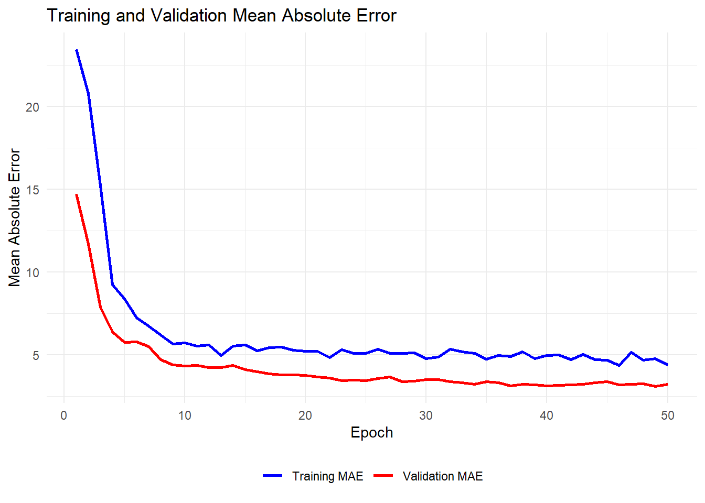

library(tensorflow)
library(keras)
library(ggplot2)Seminar 3
Overview
The goal of seminar 3 is to review the questions in Problem Set 2. Many of these questions do no require R and a selection will be discussed in person during class. Here, you will find an initial attempt at Q4.
Question 4: Please try working through the coding example in the week 6’s lecture note on the feedforward neural network.
Exercise 1 Try to run the following code on your own computer. You should be able to replicate the results in the slides for a 128-128-128 architecture. Next, modify the code to replicate other architectures.
Load packages and data
Updating R and installing
tensorflow
I had issues with some of the packages and needed to update to the latest version of R (4.2.2.). In addition, you will need to have tensorflow installed with Python on your computer. To do so, open the Anaconda Prompt and type pip install tensorflow.
We will use a data that comes with R: “Boston”. It 506 observations and 14 variables. The outcome we aim to predict is “medv”: the median value of owner occupied homes (in ’000s dollars). The number of predictors is \(p=13\).
# Load the Boston dataset
library(MASS)
data <- Boston I had trouble installing and running tensorflow. I’ve added a discussion of my troubleshooting journey to the end. Due to some decisions I made along the way (suggested by ChatGPT), I now require the additional code:
library(reticulate)
reticulate::use_python("C:/Users/neil_/anaconda3/python.exe")I hope you don’t have the same trouble!
Create training and testing database
As in Seminar 2, we need to split the data into a training and testing sample. Take note of the normalization step. We missed this step in Seminar 2.
set.seed(6)
x <- as.matrix(data[, -ncol(data)]) # All columns except the last (predictors)
y <- as.numeric(data[, ncol(data)]) # The last column
x <- scale(x) # Normalize the predictors
# Split the data
test_proportion <- 0.2 # Define the proportion of the test set
n <- nrow(data)
test_indices <- sample(1:n, size = floor(test_proportion * n))
train_indices <- setdiff(1:n, test_indices) # find all indices that are not in test_indices
x_train <- as.matrix(x[train_indices, ])
y_train <- as.numeric(y[train_indices])
x_test <- as.matrix(x[test_indices, ])
y_test <- as.numeric(y[test_indices])Execute Feedforward Neural Network
To begin, we will execute a model with a 128-128-128 architecture:
- width \(q=128\);
- depth \(r=3\);
- activation function \(g = ReLU\)
This means that the number of parameters (weights) will be,
\[ \underbrace{(13+1)\cdot128}_\text{Layer 1} + \underbrace{(128+1)\cdot128}_\text{Layer 2} + \underbrace{(128+1)\cdot128}_\text{Layer 3}+\underbrace{128+1}_\text{Output Layer} = 34,945 \]
# Input layer
input <- layer_input(shape = c(ncol(x_train)))
output <- input %>%
layer_dense(units = 128, activation = "relu") %>%
layer_dropout(rate = 0.5) %>%
layer_dense(units = 128, activation = "relu") %>%
layer_dropout(rate = 0.5) %>%
layer_dense(units = 128, activation = "relu") %>%
layer_dropout(rate = 0.5) %>%
layer_dense(units = 1) # Single output layer
model <- keras_model(inputs = input, outputs = output)
# Configure the model
tensorflow::tf$keras$Model$compile(
model,
loss = "mse", # Mean Squared Error
optimizer = tensorflow::tf$keras$optimizers$Adam(),
metrics = list("mae") # Mean Absolute Error
) # Train the model
history <- tensorflow::tf$keras$Model$fit(
model,
x = tensorflow::tf$convert_to_tensor(x_train), # Convert x to TensorFlow Tensor
y = tensorflow::tf$convert_to_tensor(y_train), # Convert y to TensorFlow Tensor
epochs = 50L, # Number of epochs, L indicates integer;
batch_size = 32L, # Batch size
validation_split = 0.2 # Use 20% of the data for validation
)Epoch 1/50
[1m 1/11[0m [32mâ”[0m[37mâ”â”â”â”â”â”â”â”â”â”â”â”â”â”â”â”â”â”â”[0m [1m28s[0m 3s/step - loss: 663.9166 - mae: 24.0856
[1m11/11[0m [32m━━━━━━━━━━━━━━━━━━━━[0m[37m[0m [1m3s[0m 37ms/step - loss: 632.0574 - mae: 23.4652 - val_loss: 245.5663 - val_mae: 14.7091
Epoch 2/50
[1m 1/11[0m [32mâ”[0m[37mâ”â”â”â”â”â”â”â”â”â”â”â”â”â”â”â”â”â”â”[0m [1m0s[0m 20ms/step - loss: 507.9779 - mae: 20.5717
[1m11/11[0m [32m━━━━━━━━━━━━━━━━━━━━[0m[37m[0m [1m0s[0m 17ms/step - loss: 528.3538 - mae: 20.9877 - val_loss: 173.0639 - val_mae: 11.7214
Epoch 3/50
[1m 1/11[0m [32mâ”[0m[37mâ”â”â”â”â”â”â”â”â”â”â”â”â”â”â”â”â”â”â”[0m [1m0s[0m 33ms/step - loss: 396.1314 - mae: 17.5856
[1m11/11[0m [32m━━━━━━━━━━━━━━━━━━━━[0m[37m[0m [1m0s[0m 10ms/step - loss: 339.7480 - mae: 16.2843 - val_loss: 88.6512 - val_mae: 7.8858
Epoch 4/50
[1m 1/11[0m [32mâ”[0m[37mâ”â”â”â”â”â”â”â”â”â”â”â”â”â”â”â”â”â”â”[0m [1m0s[0m 32ms/step - loss: 142.9713 - mae: 10.2946
[1m11/11[0m [32m━━━━━━━━━━━━━━━━━━━━[0m[37m[0m [1m0s[0m 11ms/step - loss: 141.5338 - mae: 9.5501 - val_loss: 55.9873 - val_mae: 6.3774
Epoch 5/50
[1m 1/11[0m [32mâ”[0m[37mâ”â”â”â”â”â”â”â”â”â”â”â”â”â”â”â”â”â”â”[0m [1m0s[0m 31ms/step - loss: 105.8257 - mae: 7.5125
[1m11/11[0m [32m━━━━━━━━━━━━━━━━━━━━[0m[37m[0m [1m0s[0m 10ms/step - loss: 131.5654 - mae: 8.4772 - val_loss: 47.3971 - val_mae: 5.7636
Epoch 6/50
[1m 1/11[0m [32mâ”[0m[37mâ”â”â”â”â”â”â”â”â”â”â”â”â”â”â”â”â”â”â”[0m [1m0s[0m 22ms/step - loss: 69.9026 - mae: 6.7872
[1m11/11[0m [32m━━━━━━━━━━━━━━━━━━━━[0m[37m[0m [1m0s[0m 11ms/step - loss: 83.1421 - mae: 7.0959 - val_loss: 49.9955 - val_mae: 5.7943
Epoch 7/50
[1m 1/11[0m [32mâ”[0m[37mâ”â”â”â”â”â”â”â”â”â”â”â”â”â”â”â”â”â”â”[0m [1m0s[0m 33ms/step - loss: 85.2274 - mae: 7.1684
[1m11/11[0m [32m━━━━━━━━━━━━━━━━━━━━[0m[37m[0m [1m0s[0m 10ms/step - loss: 74.1852 - mae: 6.6323 - val_loss: 46.2560 - val_mae: 5.4925
Epoch 8/50
[1m 1/11[0m [32mâ”[0m[37mâ”â”â”â”â”â”â”â”â”â”â”â”â”â”â”â”â”â”â”[0m [1m0s[0m 32ms/step - loss: 110.4753 - mae: 8.2282
[1m11/11[0m [32m━━━━━━━━━━━━━━━━━━━━[0m[37m[0m [1m0s[0m 10ms/step - loss: 76.9050 - mae: 6.5317 - val_loss: 33.8680 - val_mae: 4.7051
Epoch 9/50
[1m 1/11[0m [32mâ”[0m[37mâ”â”â”â”â”â”â”â”â”â”â”â”â”â”â”â”â”â”â”[0m [1m0s[0m 31ms/step - loss: 58.7008 - mae: 5.6691
[1m11/11[0m [32m━━━━━━━━━━━━━━━━━━━━[0m[37m[0m [1m0s[0m 10ms/step - loss: 64.0665 - mae: 5.8647 - val_loss: 30.4828 - val_mae: 4.4013
Epoch 10/50
[1m 1/11[0m [32mâ”[0m[37mâ”â”â”â”â”â”â”â”â”â”â”â”â”â”â”â”â”â”â”[0m [1m0s[0m 32ms/step - loss: 44.0340 - mae: 5.3486
[1m11/11[0m [32m━━━━━━━━━━━━━━━━━━━━[0m[37m[0m [1m0s[0m 10ms/step - loss: 58.8389 - mae: 5.7397 - val_loss: 30.1241 - val_mae: 4.3410
Epoch 11/50
[1m 1/11[0m [32mâ”[0m[37mâ”â”â”â”â”â”â”â”â”â”â”â”â”â”â”â”â”â”â”[0m [1m0s[0m 31ms/step - loss: 35.7562 - mae: 4.7363
[1m11/11[0m [32m━━━━━━━━━━━━━━━━━━━━[0m[37m[0m [1m0s[0m 9ms/step - loss: 52.5509 - mae: 5.4408 - val_loss: 30.6483 - val_mae: 4.3603
Epoch 12/50
[1m 1/11[0m [32mâ”[0m[37mâ”â”â”â”â”â”â”â”â”â”â”â”â”â”â”â”â”â”â”[0m [1m0s[0m 40ms/step - loss: 76.4808 - mae: 6.2749
[1m11/11[0m [32m━━━━━━━━━━━━━━━━━━━━[0m[37m[0m [1m0s[0m 9ms/step - loss: 56.8772 - mae: 5.6181 - val_loss: 28.6776 - val_mae: 4.2353
Epoch 13/50
[1m 1/11[0m [32mâ”[0m[37mâ”â”â”â”â”â”â”â”â”â”â”â”â”â”â”â”â”â”â”[0m [1m0s[0m 16ms/step - loss: 36.8314 - mae: 4.8038
[1m11/11[0m [32m━━━━━━━━━━━━━━━━━━━━[0m[37m[0m [1m0s[0m 10ms/step - loss: 46.0775 - mae: 5.0009 - val_loss: 28.4119 - val_mae: 4.2491
Epoch 14/50
[1m 1/11[0m [32mâ”[0m[37mâ”â”â”â”â”â”â”â”â”â”â”â”â”â”â”â”â”â”â”[0m [1m0s[0m 31ms/step - loss: 82.2864 - mae: 6.8742
[1m11/11[0m [32m━━━━━━━━━━━━━━━━━━━━[0m[37m[0m [1m0s[0m 8ms/step - loss: 56.8664 - mae: 5.6361 - val_loss: 29.8954 - val_mae: 4.3593
Epoch 15/50
[1m 1/11[0m [32mâ”[0m[37mâ”â”â”â”â”â”â”â”â”â”â”â”â”â”â”â”â”â”â”[0m [1m0s[0m 30ms/step - loss: 34.5181 - mae: 4.6077
[1m11/11[0m [32m━━━━━━━━━━━━━━━━━━━━[0m[37m[0m [1m0s[0m 9ms/step - loss: 60.0347 - mae: 5.6449 - val_loss: 26.2478 - val_mae: 4.1056
Epoch 16/50
[1m 1/11[0m [32mâ”[0m[37mâ”â”â”â”â”â”â”â”â”â”â”â”â”â”â”â”â”â”â”[0m [1m0s[0m 18ms/step - loss: 28.3506 - mae: 4.2934
[1m11/11[0m [32m━━━━━━━━━━━━━━━━━━━━[0m[37m[0m [1m0s[0m 10ms/step - loss: 44.9850 - mae: 5.0919 - val_loss: 25.0533 - val_mae: 3.9908
Epoch 17/50
[1m 1/11[0m [32mâ”[0m[37mâ”â”â”â”â”â”â”â”â”â”â”â”â”â”â”â”â”â”â”[0m [1m0s[0m 16ms/step - loss: 38.3009 - mae: 5.1667
[1m11/11[0m [32m━━━━━━━━━━━━━━━━━━━━[0m[37m[0m [1m0s[0m 10ms/step - loss: 48.8275 - mae: 5.2247 - val_loss: 23.8041 - val_mae: 3.8546
Epoch 18/50
[1m 1/11[0m [32mâ”[0m[37mâ”â”â”â”â”â”â”â”â”â”â”â”â”â”â”â”â”â”â”[0m [1m0s[0m 32ms/step - loss: 46.9098 - mae: 4.7829
[1m11/11[0m [32m━━━━━━━━━━━━━━━━━━━━[0m[37m[0m [1m0s[0m 9ms/step - loss: 53.1007 - mae: 5.4452 - val_loss: 22.7611 - val_mae: 3.8064
Epoch 19/50
[1m 1/11[0m [32mâ”[0m[37mâ”â”â”â”â”â”â”â”â”â”â”â”â”â”â”â”â”â”â”[0m [1m0s[0m 32ms/step - loss: 37.0184 - mae: 4.9325
[1m11/11[0m [32m━━━━━━━━━━━━━━━━━━━━[0m[37m[0m [1m0s[0m 10ms/step - loss: 41.8245 - mae: 5.0733 - val_loss: 22.6200 - val_mae: 3.8002
Epoch 20/50
[1m 1/11[0m [32mâ”[0m[37mâ”â”â”â”â”â”â”â”â”â”â”â”â”â”â”â”â”â”â”[0m [1m0s[0m 31ms/step - loss: 32.9736 - mae: 4.7559
[1m11/11[0m [32m━━━━━━━━━━━━━━━━━━━━[0m[37m[0m [1m0s[0m 8ms/step - loss: 45.2044 - mae: 5.1534 - val_loss: 22.2065 - val_mae: 3.7493
Epoch 21/50
[1m 1/11[0m [32mâ”[0m[37mâ”â”â”â”â”â”â”â”â”â”â”â”â”â”â”â”â”â”â”[0m [1m0s[0m 32ms/step - loss: 40.8096 - mae: 4.8859
[1m11/11[0m [32m━━━━━━━━━━━━━━━━━━━━[0m[37m[0m [1m0s[0m 8ms/step - loss: 44.2308 - mae: 5.0525 - val_loss: 21.2324 - val_mae: 3.6642
Epoch 22/50
[1m 1/11[0m [32mâ”[0m[37mâ”â”â”â”â”â”â”â”â”â”â”â”â”â”â”â”â”â”â”[0m [1m0s[0m 16ms/step - loss: 37.8849 - mae: 4.2407
[1m11/11[0m [32m━━━━━━━━━━━━━━━━━━━━[0m[37m[0m [1m0s[0m 11ms/step - loss: 48.8046 - mae: 4.9385 - val_loss: 20.1995 - val_mae: 3.6009
Epoch 23/50
[1m 1/11[0m [32mâ”[0m[37mâ”â”â”â”â”â”â”â”â”â”â”â”â”â”â”â”â”â”â”[0m [1m0s[0m 30ms/step - loss: 87.2823 - mae: 6.8691
[1m11/11[0m [32m━━━━━━━━━━━━━━━━━━━━[0m[37m[0m [1m0s[0m 8ms/step - loss: 61.1699 - mae: 5.7499 - val_loss: 19.2973 - val_mae: 3.4519
Epoch 24/50
[1m 1/11[0m [32mâ”[0m[37mâ”â”â”â”â”â”â”â”â”â”â”â”â”â”â”â”â”â”â”[0m [1m0s[0m 32ms/step - loss: 45.5278 - mae: 5.4121
[1m11/11[0m [32m━━━━━━━━━━━━━━━━━━━━[0m[37m[0m [1m0s[0m 10ms/step - loss: 41.1869 - mae: 5.0334 - val_loss: 19.3923 - val_mae: 3.4728
Epoch 25/50
[1m 1/11[0m [32mâ”[0m[37mâ”â”â”â”â”â”â”â”â”â”â”â”â”â”â”â”â”â”â”[0m [1m0s[0m 31ms/step - loss: 35.5219 - mae: 3.8203
[1m11/11[0m [32m━━━━━━━━━━━━━━━━━━━━[0m[37m[0m [1m0s[0m 10ms/step - loss: 46.0599 - mae: 4.9638 - val_loss: 19.1405 - val_mae: 3.4555
Epoch 26/50
[1m 1/11[0m [32mâ”[0m[37mâ”â”â”â”â”â”â”â”â”â”â”â”â”â”â”â”â”â”â”[0m [1m0s[0m 32ms/step - loss: 31.1827 - mae: 4.8080
[1m11/11[0m [32m━━━━━━━━━━━━━━━━━━━━[0m[37m[0m [1m0s[0m 10ms/step - loss: 45.7156 - mae: 5.2385 - val_loss: 19.9198 - val_mae: 3.5578
Epoch 27/50
[1m 1/11[0m [32mâ”[0m[37mâ”â”â”â”â”â”â”â”â”â”â”â”â”â”â”â”â”â”â”[0m [1m0s[0m 38ms/step - loss: 31.1750 - mae: 4.5761
[1m11/11[0m [32m━━━━━━━━━━━━━━━━━━━━[0m[37m[0m [1m0s[0m 10ms/step - loss: 41.2889 - mae: 4.9923 - val_loss: 21.1100 - val_mae: 3.6708
Epoch 28/50
[1m 1/11[0m [32mâ”[0m[37mâ”â”â”â”â”â”â”â”â”â”â”â”â”â”â”â”â”â”â”[0m [1m0s[0m 31ms/step - loss: 87.4780 - mae: 5.6919
[1m11/11[0m [32m━━━━━━━━━━━━━━━━━━━━[0m[37m[0m [1m0s[0m 11ms/step - loss: 62.9454 - mae: 5.2592 - val_loss: 18.4326 - val_mae: 3.3825
Epoch 29/50
[1m 1/11[0m [32mâ”[0m[37mâ”â”â”â”â”â”â”â”â”â”â”â”â”â”â”â”â”â”â”[0m [1m0s[0m 37ms/step - loss: 37.3212 - mae: 4.8266
[1m11/11[0m [32m━━━━━━━━━━━━━━━━━━━━[0m[37m[0m [1m0s[0m 10ms/step - loss: 40.8122 - mae: 4.8955 - val_loss: 18.5076 - val_mae: 3.4074
Epoch 30/50
[1m 1/11[0m [32mâ”[0m[37mâ”â”â”â”â”â”â”â”â”â”â”â”â”â”â”â”â”â”â”[0m [1m0s[0m 16ms/step - loss: 30.6347 - mae: 4.1556
[1m11/11[0m [32m━━━━━━━━━━━━━━━━━━━━[0m[37m[0m [1m0s[0m 10ms/step - loss: 38.9192 - mae: 4.5772 - val_loss: 19.8438 - val_mae: 3.5056
Epoch 31/50
[1m 1/11[0m [32mâ”[0m[37mâ”â”â”â”â”â”â”â”â”â”â”â”â”â”â”â”â”â”â”[0m [1m0s[0m 26ms/step - loss: 43.7283 - mae: 4.8657
[1m11/11[0m [32m━━━━━━━━━━━━━━━━━━━━[0m[37m[0m [1m0s[0m 10ms/step - loss: 38.9090 - mae: 4.5786 - val_loss: 19.6350 - val_mae: 3.4969
Epoch 32/50
[1m 1/11[0m [32mâ”[0m[37mâ”â”â”â”â”â”â”â”â”â”â”â”â”â”â”â”â”â”â”[0m [1m0s[0m 30ms/step - loss: 61.5954 - mae: 6.3124
[1m11/11[0m [32m━━━━━━━━━━━━━━━━━━━━[0m[37m[0m [1m0s[0m 10ms/step - loss: 52.5210 - mae: 5.7408 - val_loss: 18.8119 - val_mae: 3.3884
Epoch 33/50
[1m 1/11[0m [32mâ”[0m[37mâ”â”â”â”â”â”â”â”â”â”â”â”â”â”â”â”â”â”â”[0m [1m0s[0m 15ms/step - loss: 27.0851 - mae: 4.0869
[1m11/11[0m [32m━━━━━━━━━━━━━━━━━━━━[0m[37m[0m [1m0s[0m 9ms/step - loss: 46.4488 - mae: 5.1246 - val_loss: 18.3383 - val_mae: 3.3172
Epoch 34/50
[1m 1/11[0m [32mâ”[0m[37mâ”â”â”â”â”â”â”â”â”â”â”â”â”â”â”â”â”â”â”[0m [1m0s[0m 20ms/step - loss: 134.5245 - mae: 7.2331
[1m11/11[0m [32m━━━━━━━━━━━━━━━━━━━━[0m[37m[0m [1m0s[0m 10ms/step - loss: 67.2342 - mae: 5.4009 - val_loss: 17.5370 - val_mae: 3.2379
Epoch 35/50
[1m 1/11[0m [32mâ”[0m[37mâ”â”â”â”â”â”â”â”â”â”â”â”â”â”â”â”â”â”â”[0m [1m0s[0m 25ms/step - loss: 39.8166 - mae: 5.1745
[1m11/11[0m [32m━━━━━━━━━━━━━━━━━━━━[0m[37m[0m [1m0s[0m 10ms/step - loss: 41.6042 - mae: 4.9993 - val_loss: 18.9474 - val_mae: 3.3788
Epoch 36/50
[1m 1/11[0m [32mâ”[0m[37mâ”â”â”â”â”â”â”â”â”â”â”â”â”â”â”â”â”â”â”[0m [1m0s[0m 16ms/step - loss: 31.2738 - mae: 4.2572
[1m11/11[0m [32m━━━━━━━━━━━━━━━━━━━━[0m[37m[0m [1m0s[0m 10ms/step - loss: 40.7058 - mae: 4.9300 - val_loss: 18.1934 - val_mae: 3.3237
Epoch 37/50
[1m 1/11[0m [32mâ”[0m[37mâ”â”â”â”â”â”â”â”â”â”â”â”â”â”â”â”â”â”â”[0m [1m0s[0m 32ms/step - loss: 22.5861 - mae: 3.6045
[1m11/11[0m [32m━━━━━━━━━━━━━━━━━━━━[0m[37m[0m [1m0s[0m 10ms/step - loss: 38.8193 - mae: 4.6183 - val_loss: 16.4218 - val_mae: 3.1274
Epoch 38/50
[1m 1/11[0m [32mâ”[0m[37mâ”â”â”â”â”â”â”â”â”â”â”â”â”â”â”â”â”â”â”[0m [1m0s[0m 35ms/step - loss: 21.3022 - mae: 3.9133
[1m11/11[0m [32m━━━━━━━━━━━━━━━━━━━━[0m[37m[0m [1m0s[0m 8ms/step - loss: 39.4454 - mae: 4.9131 - val_loss: 17.0294 - val_mae: 3.2152
Epoch 39/50
[1m 1/11[0m [32mâ”[0m[37mâ”â”â”â”â”â”â”â”â”â”â”â”â”â”â”â”â”â”â”[0m [1m0s[0m 19ms/step - loss: 68.0831 - mae: 5.4992
[1m11/11[0m [32m━━━━━━━━━━━━━━━━━━━━[0m[37m[0m [1m0s[0m 10ms/step - loss: 44.3206 - mae: 4.7629 - val_loss: 16.6888 - val_mae: 3.1837
Epoch 40/50
[1m 1/11[0m [32mâ”[0m[37mâ”â”â”â”â”â”â”â”â”â”â”â”â”â”â”â”â”â”â”[0m [1m0s[0m 32ms/step - loss: 74.1833 - mae: 5.6997
[1m11/11[0m [32m━━━━━━━━━━━━━━━━━━━━[0m[37m[0m [1m0s[0m 8ms/step - loss: 52.8883 - mae: 5.2475 - val_loss: 16.3902 - val_mae: 3.1227
Epoch 41/50
[1m 1/11[0m [32mâ”[0m[37mâ”â”â”â”â”â”â”â”â”â”â”â”â”â”â”â”â”â”â”[0m [1m0s[0m 34ms/step - loss: 46.1044 - mae: 5.2085
[1m11/11[0m [32m━━━━━━━━━━━━━━━━━━━━[0m[37m[0m [1m0s[0m 9ms/step - loss: 40.7309 - mae: 4.8950 - val_loss: 16.5630 - val_mae: 3.1448
Epoch 42/50
[1m 1/11[0m [32mâ”[0m[37mâ”â”â”â”â”â”â”â”â”â”â”â”â”â”â”â”â”â”â”[0m [1m0s[0m 32ms/step - loss: 26.9159 - mae: 4.3570
[1m11/11[0m [32m━━━━━━━━━━━━━━━━━━━━[0m[37m[0m [1m0s[0m 8ms/step - loss: 33.4741 - mae: 4.5750 - val_loss: 16.9832 - val_mae: 3.1910
Epoch 43/50
[1m 1/11[0m [32mâ”[0m[37mâ”â”â”â”â”â”â”â”â”â”â”â”â”â”â”â”â”â”â”[0m [1m0s[0m 21ms/step - loss: 46.8199 - mae: 5.5385
[1m11/11[0m [32m━━━━━━━━━━━━━━━━━━━━[0m[37m[0m [1m0s[0m 11ms/step - loss: 46.9350 - mae: 5.1078 - val_loss: 17.0056 - val_mae: 3.2278
Epoch 44/50
[1m 1/11[0m [32mâ”[0m[37mâ”â”â”â”â”â”â”â”â”â”â”â”â”â”â”â”â”â”â”[0m [1m0s[0m 32ms/step - loss: 24.3247 - mae: 3.6715
[1m11/11[0m [32m━━━━━━━━━━━━━━━━━━━━[0m[37m[0m [1m0s[0m 10ms/step - loss: 35.3725 - mae: 4.5227 - val_loss: 17.7155 - val_mae: 3.3111
Epoch 45/50
[1m 1/11[0m [32mâ”[0m[37mâ”â”â”â”â”â”â”â”â”â”â”â”â”â”â”â”â”â”â”[0m [1m0s[0m 34ms/step - loss: 23.4719 - mae: 3.8599
[1m11/11[0m [32m━━━━━━━━━━━━━━━━━━━━[0m[37m[0m [1m0s[0m 10ms/step - loss: 32.9006 - mae: 4.3945 - val_loss: 18.4533 - val_mae: 3.3899
Epoch 46/50
[1m 1/11[0m [32mâ”[0m[37mâ”â”â”â”â”â”â”â”â”â”â”â”â”â”â”â”â”â”â”[0m [1m0s[0m 21ms/step - loss: 33.6802 - mae: 4.7497
[1m11/11[0m [32m━━━━━━━━━━━━━━━━━━━━[0m[37m[0m [1m0s[0m 9ms/step - loss: 35.2375 - mae: 4.4376 - val_loss: 16.6232 - val_mae: 3.1828
Epoch 47/50
[1m 1/11[0m [32mâ”[0m[37mâ”â”â”â”â”â”â”â”â”â”â”â”â”â”â”â”â”â”â”[0m [1m0s[0m 19ms/step - loss: 50.0619 - mae: 5.4806
[1m11/11[0m [32m━━━━━━━━━━━━━━━━━━━━[0m[37m[0m [1m0s[0m 10ms/step - loss: 46.1781 - mae: 5.1967 - val_loss: 16.9815 - val_mae: 3.2123
Epoch 48/50
[1m 1/11[0m [32mâ”[0m[37mâ”â”â”â”â”â”â”â”â”â”â”â”â”â”â”â”â”â”â”[0m [1m0s[0m 32ms/step - loss: 45.3129 - mae: 4.8168
[1m11/11[0m [32m━━━━━━━━━━━━━━━━━━━━[0m[37m[0m [1m0s[0m 9ms/step - loss: 38.7393 - mae: 4.7289 - val_loss: 17.6066 - val_mae: 3.2604
Epoch 49/50
[1m 1/11[0m [32mâ”[0m[37mâ”â”â”â”â”â”â”â”â”â”â”â”â”â”â”â”â”â”â”[0m [1m0s[0m 32ms/step - loss: 37.5335 - mae: 4.5116
[1m11/11[0m [32m━━━━━━━━━━━━━━━━━━━━[0m[37m[0m [1m0s[0m 9ms/step - loss: 43.7944 - mae: 4.7757 - val_loss: 15.9966 - val_mae: 3.1041
Epoch 50/50
[1m 1/11[0m [32mâ”[0m[37mâ”â”â”â”â”â”â”â”â”â”â”â”â”â”â”â”â”â”â”[0m [1m0s[0m 20ms/step - loss: 39.1864 - mae: 4.1038
[1m11/11[0m [32m━━━━━━━━━━━━━━━━━━━━[0m[37m[0m [1m0s[0m 10ms/step - loss: 38.2058 - mae: 4.5389 - val_loss: 17.1638 - val_mae: 3.2152# Predictions
predictions <- tensorflow::tf$keras$Model$predict(model, tensorflow::tf$convert_to_tensor(x_test))
[1m1/4[0m [32mâ”â”â”â”â”[0m[37mâ”â”â”â”â”â”â”â”â”â”â”â”â”â”â”[0m [1m0s[0m 70ms/step
[1m4/4[0m [32m━━━━━━━━━━━━━━━━━━━━[0m[37m[0m [1m0s[0m 21ms/step# Print the result
tensorflow::tf$keras$Model$summary(model)Model: "functional"
┌─────────────────────────────────┬────────────────────────┬───────────────┐
│ Layer (type) │ Output Shape │ Param # │
├─────────────────────────────────┼────────────────────────┼───────────────┤
│ input_layer (InputLayer) │ (None, 13) │ 0 │
├─────────────────────────────────┼────────────────────────┼───────────────┤
│ dense_3 (Dense) │ (None, 128) │ 1,792 │
├─────────────────────────────────┼────────────────────────┼───────────────┤
│ dropout_2 (Dropout) │ (None, 128) │ 0 │
├─────────────────────────────────┼────────────────────────┼───────────────┤
│ dense_2 (Dense) │ (None, 128) │ 16,512 │
├─────────────────────────────────┼────────────────────────┼───────────────┤
│ dropout_1 (Dropout) │ (None, 128) │ 0 │
├─────────────────────────────────┼────────────────────────┼───────────────┤
│ dense_1 (Dense) │ (None, 128) │ 16,512 │
├─────────────────────────────────┼────────────────────────┼───────────────┤
│ dropout (Dropout) │ (None, 128) │ 0 │
├─────────────────────────────────┼────────────────────────┼───────────────┤
│ dense (Dense) │ (None, 1) │ 129 │
└─────────────────────────────────┴────────────────────────┴───────────────┘
Total params: 104,837 (409.52 KB)
Trainable params: 34,945 (136.50 KB)
Non-trainable params: 0 (0.00 B)
Optimizer params: 69,892 (273.02 KB)Extract the final training and validation loss
final_training_loss <- history$history$loss[length(history$history$loss)]
final_validation_loss <- history$history$val_loss[length(history$history$val_loss)]
cat("Final Training Loss:", final_training_loss, "\n")Final Training Loss: 33.58537 cat("Final Validation Loss:", final_validation_loss, "\n")Final Validation Loss: 17.16378 Visualize the results
Convert history to a data frame with epoch numbers
history_df <- as.data.frame(history$history)
history_df$epoch <- seq_len(nrow(history_df))Plot training and validation loss
ggplot(history_df, aes(x = epoch)) +
geom_line(aes(y = loss, color = "Training Loss"), linewidth = 1) +
geom_line(aes(y = val_loss, color = "Validation Loss"), linewidth = 1) +
labs(
title = "Training and Validation Loss",
x = "Epoch",
y = "Loss"
) +
scale_color_manual(values = c("blue", "red")) +
theme_minimal() +
theme(
legend.title = element_blank(),
legend.position = "bottom" # Options: "top", "bottom", "left", "right", or c(x, y) for custom
)
Plot training and validation mean absolute error (MAE)
ggplot(history_df, aes(x = epoch)) +
geom_line(aes(y = mae, color = "Training MAE"), linewidth = 1) +
geom_line(aes(y = val_mae, color = "Validation MAE"), linewidth = 1) +
labs(
title = "Training and Validation Mean Absolute Error",
x = "Epoch",
y = "Mean Absolute Error"
) +
scale_color_manual(values = c("blue", "red")) +
theme_minimal() +
theme(
legend.title = element_blank(),
legend.position = "bottom" # Options: "top", "bottom", "left", "right", or c(x, y) for custom
)
Troubleshooting
I struggled initially to run the following code. In the end, I used ChatGPT to help me work through a series errors, but found that ChatGPTs solutions created new problems that I struggled to undo.
PC vs Mac
I am PC user, so the following advice may not relate to the experience of a Mac user.
Here’s what I did:`
- Initially, I installed
tensorflowandkerasin R (via RStudio). - I then noted that the packages required R4.2.2 and I was on R4.2.0. So, I updated R; which essentially requires installing R again. RStudio refused to recognize the new version, so I had to manually do so using the following advice from ChatGPT:
- Close RStudio.
- Open RStudio, but hold Ctrl (Windows) or Cmd (Mac) while clicking the icon.
- A menu should appear allowing you to select the new R installation.
I then used the following code to shift my packages:
# Run in NEW version of R (not RStudio)
old_lib <- "C:/Program Files/R/R-4.4.0/library"
new_lib <- "C:/Program Files/R/R-4.4.2/library"
dir.create(new_lib, showWarnings = FALSE)
file.copy(list.files(old_lib, full.names = TRUE), new_lib, recursive = TRUE)Type version into the RStudio console to check that the up-to-date version is being used.
- As soon as I tried to run the code I got an error, the beginning of which read:
Error: Valid installation of TensorFlow not found.
Python environments searched for 'tensorflow' package:
C:\Users\neil_\anaconda3\python.exeThis is where things started to go wrong.
- You can use the following code in RStudio to check your python environment:
library(reticulate)
py_config()python: C:/Users/neil_/anaconda3/python.exe
libpython: C:/Users/neil_/anaconda3/python312.dll
pythonhome: C:/Users/neil_/anaconda3
version: 3.12.4 | packaged by Anaconda, Inc. | (main, Jun 18 2024, 15:03:56) [MSC v.1929 64 bit (AMD64)]
Architecture: 64bit
numpy: C:/Users/neil_/anaconda3/Lib/site-packages/numpy
numpy_version: 1.26.4
tensorflow: C:\Users\neil_\ANACON~1\Lib\site-packages\tensorflow\__init__.p
NOTE: Python version was forced by use_python() functionI followed ChatGPTs suggestion to “Open Anaconda Prompt (or your command prompt) and run:”
conda activate base
conda install tensorflowThis gave me a long error. Something like,
Channels:
- defaults
Platform: win-64
Collecting package metadata (repodata.json): done
Solving environment: - warning libmamba Added empty dependency for problem type SOLVER_RULE_UPDATE
failed
LibMambaUnsatisfiableError: Encountered problems while solving:
- nothing provides bleach 1.5.0 needed by tensorboard-1.7.0-py35he025d50_1- According to ChatGPT, “The error suggests that there’s a Python version mismatch when trying to install TensorFlow in your Anaconda environment. It looks like your Anaconda environment has Python 3.12, but TensorFlow requires Python 3.8–3.10 (depending on the version).†So, it suggested creating a virtual environment with Python 3.10. Using the code:
conda create --name r-tensorflow python=3.10
conda activate r-tensorflow
pip install tensorflowYou then need to configure R to use this new environment.
library(reticulate)
use_condaenv("r-tensorflow", required = TRUE)
py_config()
install.packages("tensorflow")
tensorflow::install_tensorflow()
library(tensorflow)
tf$constant("TensorFlow is working!")- I eventually had to undo all of this.
conda info --envs
conda deactivate
conda env remove --name r-tensorflow
conda info --envs
conda clean --allAND instead, managed to install tensorflow in the Base environment using
pip install tensorflow- For some reason, I could not get Quarto to stop looking in the
r-tensorflowenvironment. So, now the code runs only if I add:
library(reticulate)
reticulate::use_python("C:/Users/neil_/anaconda3/python.exe")